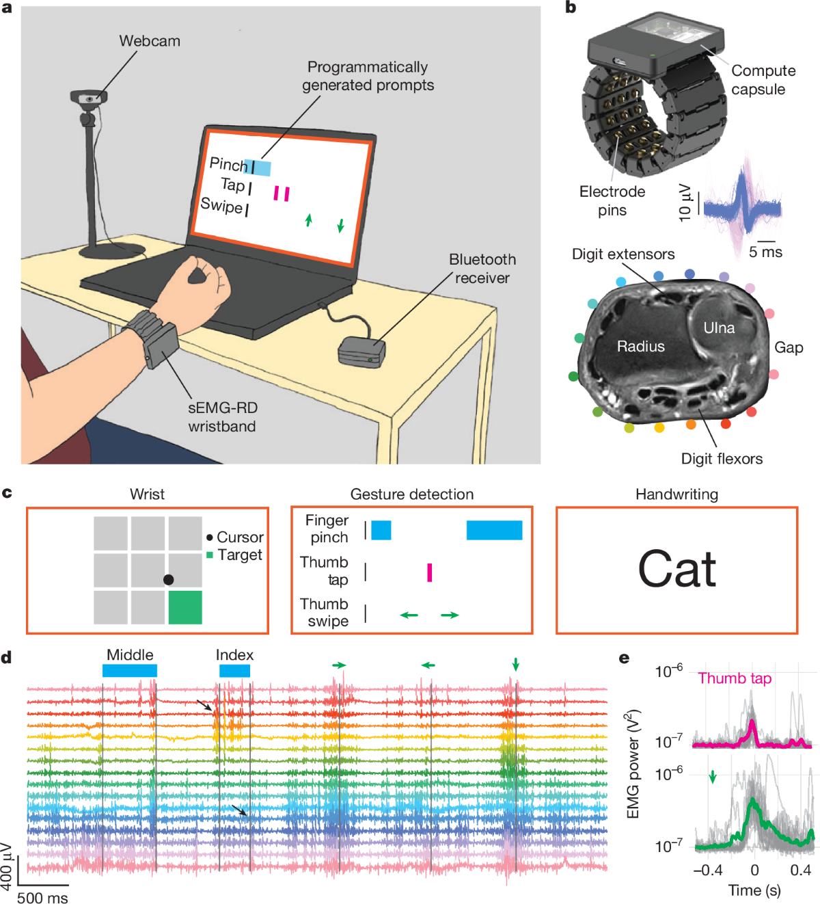
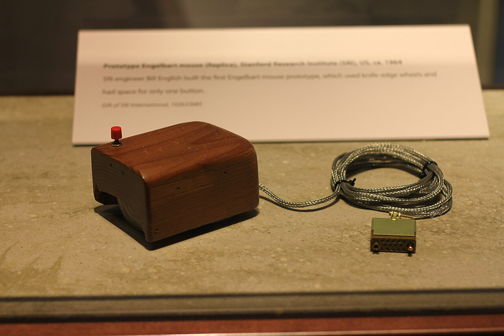
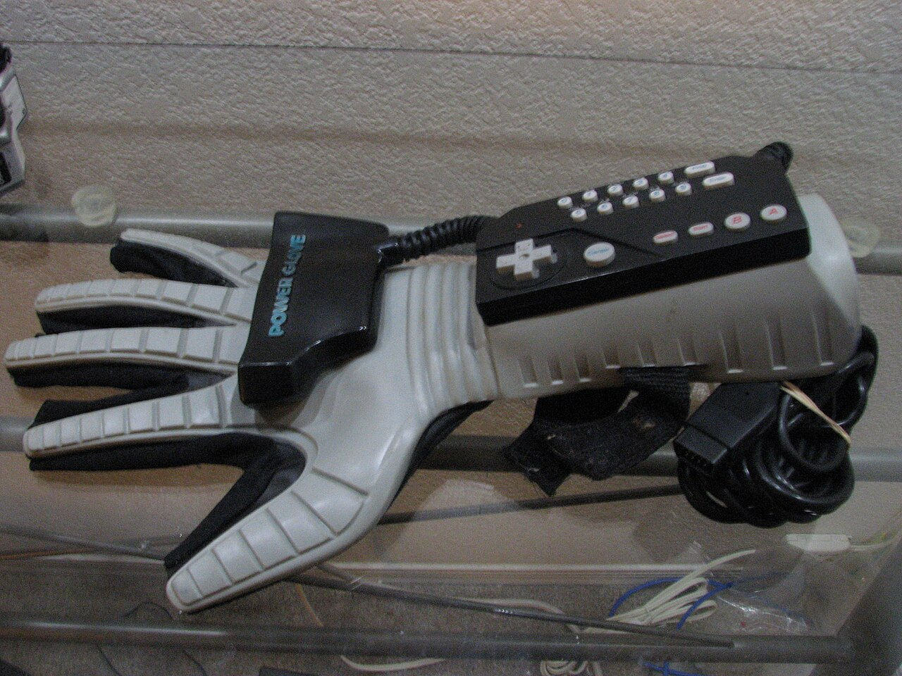
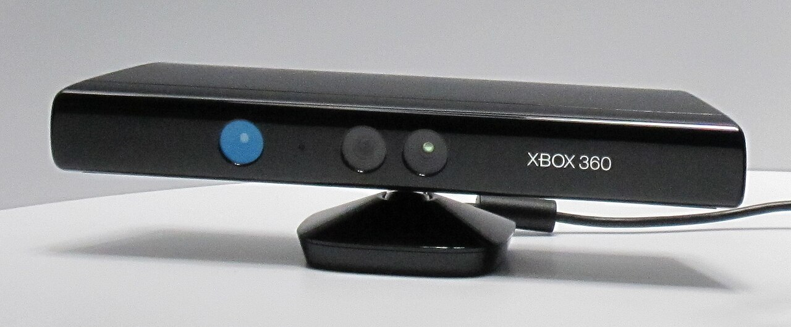
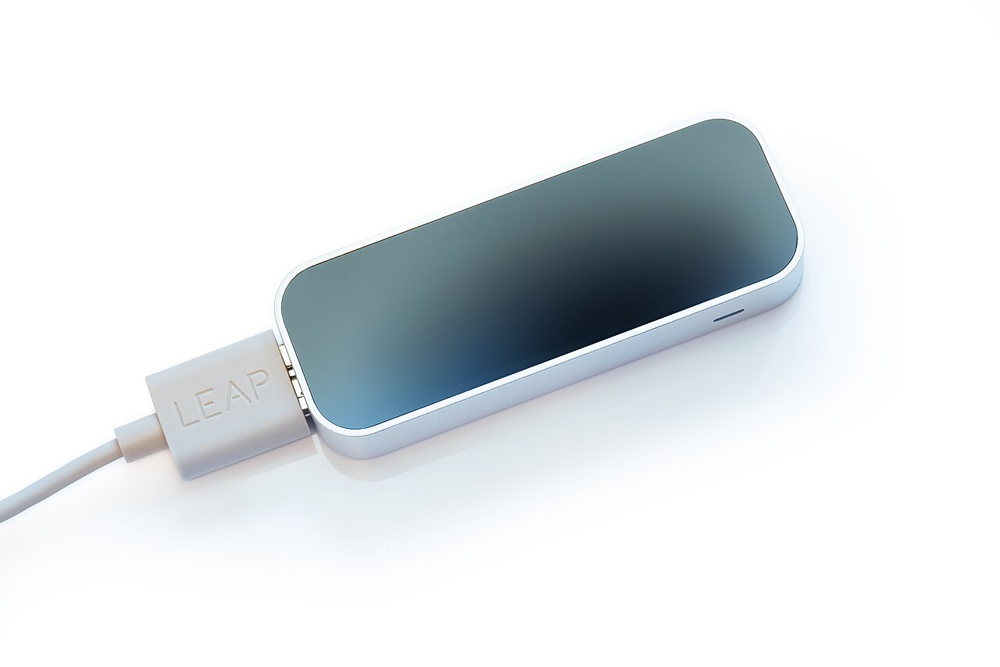
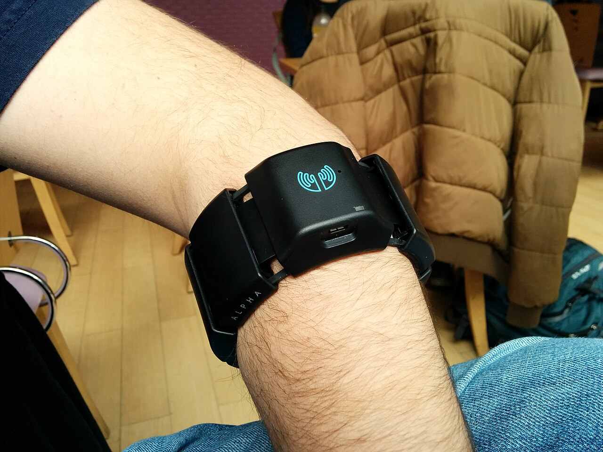

Gestos que no se ven
En la calle o en clase no apetece hablarle a unas gafas ni levantar el brazo delante de todos. Un toque de pulgar con índice no lo nota nadie.
Una pulsera que lee la actividad eléctrica de los músculos de la muñeca y la convierte en órdenes. Los gestos son tan pequeños que casi no se ven.
Carlos Fernández González-Busto · Fundamentos de la Interacción Persona-Ordenador · UPSA, noviembre de 2026
La Meta Neural Band es una pulsera de tela con electrodos en la cara interior. Meta la presentó el 17 de septiembre de 2025 junto con las gafas Meta Ray-Ban Display, que llevan una pantalla pequeña dentro de la lente derecha. Las dos cosas se venden en el mismo paquete.
La pulsera es el mando de las gafas. En vez de tocar la patilla o hablar en voz alta, se junta el pulgar con el índice o se desliza un dedo sobre otro, y lo que hay en la pantalla responde.
No lleva cámara y tampoco mide el movimiento de la mano. Lo que recoge es la señal eléctrica que el cerebro manda a los músculos del antebrazo para mover los dedos. Esa técnica se llama electromiografía de superficie (sEMG) y hasta ahora se usaba sobre todo en medicina y en prótesis.
| Fabricante | Meta (Reality Labs) |
|---|---|
| Presentación | 17 de septiembre de 2025 |
| A la venta | 30 de septiembre de 2025, en Estados Unidos |
| Precio | 799 dólares, con las gafas |
| Tipo de dispositivo | De entrada, por gestos de la mano |
| Sensor | Electrodos de sEMG en la muñeca |
| Respuesta | Vibra al reconocer el gesto |
| Batería | Hasta 18 horas |
| Tallas | Tres |
| En España | Todavía no se vende |
La he elegido porque cambia el sitio donde ocurre la interacción. Con el ratón, la pantalla táctil o una cámara como la del Kinect, el ordenador mira desde fuera lo que hace la mano. Aquí la señal se coge antes, en el músculo. Por eso el gesto puede ser mínimo y da igual dónde esté la mano: en el bolsillo, apoyada en la mesa o a oscuras.
También me parece el dispositivo de entrada más nuevo de verdad que ha salido a la venta en estos dos años. Casi todo lo demás son mejoras de algo que ya existía, como ratones que vibran o cascos más ligeros. Esto es otra forma de dar órdenes.
En la calle o en clase no apetece hablarle a unas gafas ni levantar el brazo delante de todos. Un toque de pulgar con índice no lo nota nadie.
Los sistemas que siguen la mano con cámaras fallan si la mano se tapa o hay poca luz. La pulsera mide el músculo, así que no necesita verla.
El modelo que interpreta las señales se entrenó con datos de miles de voluntarios, y funciona con una persona nueva sin calibrarlo antes para ella.
Cuando reconoce un gesto, la pulsera vibra. Es la retroalimentación de siempre: sin ella no se sabe si el sistema se ha enterado, porque en el aire no hay botón que se hunda.
Como lee la intención de mover y no el movimiento completo, Meta y la Universidad Carnegie Mellon la están probando con personas que tienen parálisis en las manos. Encaja con el diseño universal del tema 3.
Desde 2026 se pueden escribir mensajes trazando las letras con el dedo sobre una superficie, como la mesa. De momento solo en inglés.
El equipo de Meta publicó los resultados en la revista Nature en julio de 2025. Personas que no habían usado nunca la pulsera escribieron a mano 20,9 palabras por minuto y llegaron a 0,88 gestos por segundo en la prueba de gestos sueltos. Para comparar: en el teclado del móvil se escriben unas 36 palabras por minuto, así que todavía es más lenta.

Todos se hacen con una sola mano y sin levantarla. Son los que explica la ayuda oficial de Meta.
| Gesto | Qué hace | A qué equivale |
|---|---|---|
| Tocar el pulgar con el índice | Selecciona | El clic del ratón |
| Tocar el pulgar con el corazón | Vuelve atrás | El botón «atrás» del móvil |
| Dos toques de pulgar con corazón | Enciende o apaga la pantalla | El botón de bloqueo |
| Deslizar el pulgar sobre el índice | Se desplaza por menús y listas | La rueda del ratón |
| Mantener juntos pulgar y corazón | Abre el cambio de aplicación | Alt + Tab |
| Dos toques del pulgar en el lado del índice | Llama al asistente Meta AI | Decir «Hey Meta» |
| Juntar pulgar e índice y girar la muñeca | Sube o baja el volumen | Una rueda de volumen |
| Trazar letras con el dedo sobre una superficie | Escribe texto | El teclado |
La Neural Band no sustituye a un solo aparato. Hereda de dos familias. Una es la de los dispositivos apuntadores, que empieza con el ratón. La otra es la de los que intentan leer la mano directamente, que empieza con los guantes de datos. Cada paso quitó algo de en medio: primero la mesa, luego el guante y luego la cámara.
1964
Bill English construyó el primer prototipo en el laboratorio de Douglas Engelbart, y en 1968 se enseñó en público. La mano mueve una caja sobre la mesa y el cursor la sigue. Sigue siendo el apuntador más preciso, pero necesita una superficie y tener la mano ocupada.

1965
Eric Johnson describió la primera pantalla táctil capacitiva en el Royal Radar Establishment, en Inglaterra. Desaparece el intermediario: se toca directamente lo que se ve. A cambio hay que tener la pantalla al alcance de la mano y mirarla, que es justo lo que unas gafas no permiten.
1977
El Sayre Glove fue el primer guante con sensores. Diez años después llegó el DataGlove de VPL, con fibra óptica en cada dedo, y en 1989 su versión barata para la consola de Nintendo, el Power Glove. Leían la mano entera, pero había que ponerse un guante con cables, y el sudor y las tallas eran un problema.

2010
Microsoft quitó el guante y puso una cámara de profundidad delante del sofá. Vendió ocho millones en sesenta días. El cuerpo entero era el mando, pero solo dentro de lo que la cámara veía, y los gestos tenían que ser grandes, de brazo entero.

2013
La misma idea en pequeño: una cajita con cámaras infrarrojas sobre la mesa que sigue los dedos uno a uno. Ganó precisión, pero la mano tiene que quedarse encima del sensor. Es el sistema que usan hoy los cascos de realidad virtual, con las cámaras en el propio casco.

2013
La empresa canadiense Thalmic Labs anunció en 2013 un brazalete con ocho sensores de electromiografía que se llevaba en el antebrazo. Ya leía el músculo en vez de mirar la mano. Reconocía pocos gestos, había que calibrarlo y se dejó de vender en octubre de 2018. En 2019 sus patentes las compró CTRL-labs, y ese mismo septiembre Facebook compró CTRL-labs. De ese equipo sale la Neural Band.

2025
Baja del antebrazo a la muñeca, es mucho más pequeña y no hay que calibrarla. En julio de 2025 se publica la investigación en Nature y en septiembre sale a la venta con las gafas. En 2026 llega la escritura a mano, y desde el 24 de septiembre se puede comprar por internet y fuera de Estados Unidos: Canadá, Reino Unido y, desde el 13 de octubre, Francia, Italia y Alemania.
| Frente a | Lo que quita | Lo que pierde |
|---|---|---|
| Ratón | La mesa y la mano ocupada | Precisión para apuntar a un punto exacto |
| Pantalla táctil | Tener que mirar y alcanzar la pantalla | Ver directamente lo que se toca |
| Guantes de datos | El guante, los cables y la mano cubierta | La posición exacta de cada dedo |
| Kinect y Leap Motion | La cámara: funciona tapada y a oscuras | Los gestos grandes, de brazo o de cuerpo |
| Brazalete Myo | La calibración y el tamaño | Ser abierto: Myo funcionaba con cualquier ordenador |
| Control por voz | Hablar en alto en público | Decir frases largas sin esfuerzo |
Su análisis de las gafas dice que el reconocimiento de gestos acierta casi siempre. Los únicos fallos que cuenta son en los deslizamientos hacia los lados mientras se camina.
Scott Stein la describe como increíble y rara a la vez. Le dura el día entero, pero se queja de que es otra cosa más que cargar y de que solo sirve para las gafas.
En este foro, un usuario ciego cuenta su experiencia: la pulsera le reconoce los gestos sin problemas. Es de las pocas opiniones de alguien que no puede mirar la pantalla para comprobarlo.
Meta ha publicado el código y más de cien horas de grabaciones de 300 voluntarios. Y hay aficionados que ya la han conectado a un Mac por su cuenta, como el proyecto kinesis.